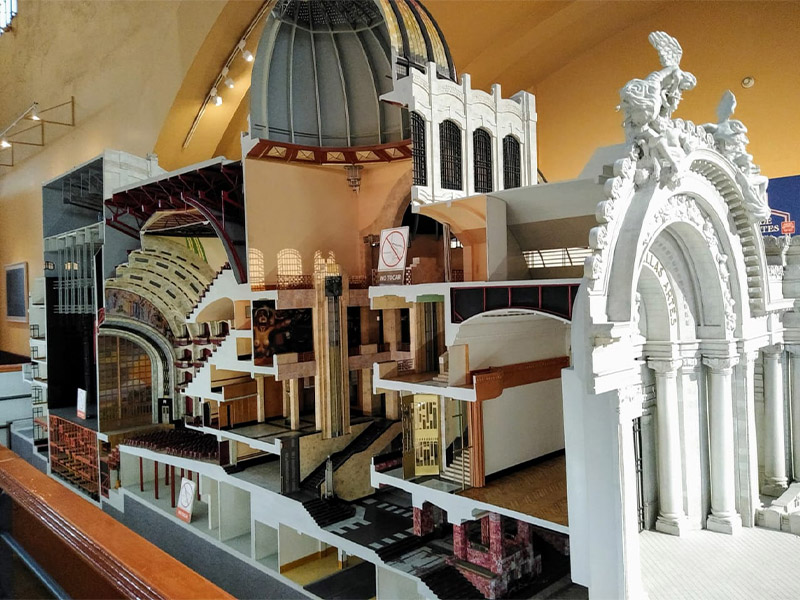
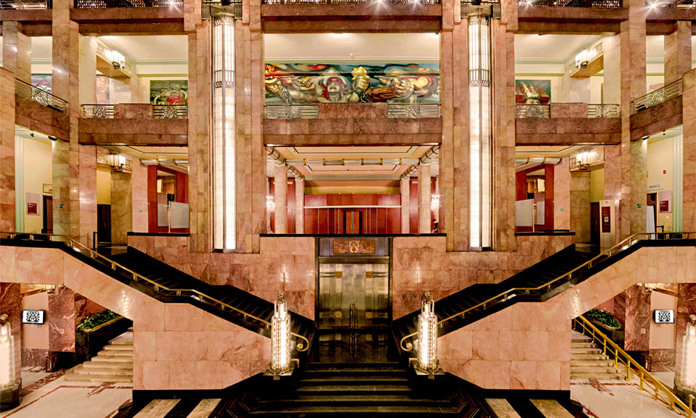

Arquitectura
ARQUITECTURA DEL PALACIO DE BELLAS ARTES
A principios del siglo XX, como parte de los festejos del Centenario de la Independencia de México y el programa de obras que buscaba embellecer la ciudad, el entonces presidente Porfirio Díaz encargó al arquitecto italiano, Adamo Boari, el levantamiento de un nuevo Teatro Nacional que remplazara al antiguo. Se eligió el predio que ocupaba el Convento de Santa Isabel. El proyecto fue coordinado por la Secretaría de Comunicaciones y Obras Públicas, y tuvo distintas fases de construcción.
En la primera etapa, de 1904 a 1912, se realizaron los cimientos y el exterior del edificio. Boari siguió los parámetros del “Nuevo Arte Decorativo Moderno”, conocido internacionalmente como Art Nouveau. En la estructura del edificio utilizó acero y concreto, técnica que era considerada novedosa; y revistió el esqueleto metálico de mármol. Las esculturas de las fachadas, todas en mármol de Carrara, fueron encargadas a los artistas extranjeros Leonardo Bistolfi, André Allar y Gianetti Fiorenzo, mientras que las esculturas de bronce de la cúpula fueron diseñadas por el artista húngaro Géza Maróti.
 El plazo para concluir las obras era de cuatro años, sin embargo, los trabajos no se finalizaron debido a que las características del suelo no soportaron la estructura del edificio y el presupuesto inicial fue excedido. Finalmente, con el estallido de la Revolución en 1910, la construcción fue interrumpida.
Los trabajos se reanudaron en 1928, con el arquitecto mexicano Federico Mariscal como director de obras. Esta segunda etapa se distinguió por el cambio de estilo en la decoración interior siguiendo los parámetros del Art Déco, así como por el uso de materiales como ónix y mármol. Los detalles de herrería dentro del recinto fueron diseñados por Edgar Brandt, ejemplo de su trabajo son las lámparas que rematan con la representación de Chaac, el dios maya de la lluvia.
De 1932 a 1934, el ingeniero Alberto J. Pani, entonces Secretario de Hacienda impulsó la última etapa de construcción. Se transformó a manera que funcionara como foro nacional para las artes escénicas y plásticas. Fue entonces cuando recibió el nombre de Palacio de Bellas Artes. Finalmente, fue inaugurado el 29 de septiembre de 1934 como un recinto único en su género.